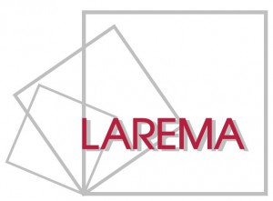
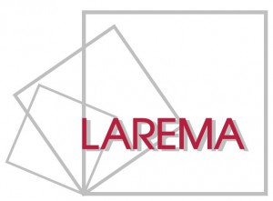
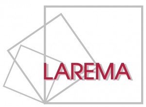
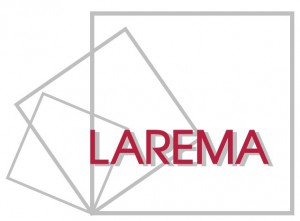

Organisation
Organisors / scientific committee
Erwan Brugallé (Nantes) |
Financial support:
ANR FIBALGA |

 

6 - 10 June in Le Croisic
|
|
To see title and abstract click on name of speaker
To see title and abstract click on name of speaker
The ordinal of dynamical degrees of birational maps of the projective plane For any birational map of the projective plane, one can consider its dynamical degree, which describes the dynamical behaviour of this map. Taking all dynamical degrees of birational maps together, we obtain a well-ordered subset of the real line, and we may ask: what is the ordinal of this set? In this talk I will give an introduction to the dynamical degree and ordinals, and prove that the set of dynamical degrees of all birational maps of the plane is of order type \omega^\omega, where \omega is the first infinite ordinal.
To see title and abstract click on name of speaker
Fewnomial bounds for real varieties and singularities The topology of a real algebraic variety can be estimated by the topology of its complex part, which is roughly speaking determined by the degree, but finer estimates can be obtained in some cases by the complexity of the defining equations, typically, the the Newton polytopes or the number of monomials. In this talk, I will overview what is known on the subject and will also present works in progress.
To see title and abstract click on name of speaker
Algebraic models of the real affine plane and some foliated open surfaces A fake real plane is a smooth geometrically integral real algebraic surface whose real locus is diffeomorphic to an open disc, whose complexification has the reduced rational homology type of a point, but is not algebraically isomorphic to the affine 2-space over the reals. I will review examples and some techniques to construct and study isomorphism classes of such fake planes up to biregular isomorphisms and birational diffeomorphisms which were developed in a series of joint papers with Frédéric Mangolte and Jérémy Blanc. Time permitting, I will also discuss some extensions of these methods towards the understanding of rational algebraic models of certain open differential surfaces foliated by closed real lines (work in no real progress with Frédéric Mangolte).
To see title and abstract click on name of speaker
Saturation, seminormalization and homeomorphisms of algebraic varieties (joint work with François Bernard, Jean-Philippe Monnier and Ronan Quarez) We address the question under which conditions a bijective morphism between complex algebraic varieties is an isomorphism. Our two answers involve the seminormalization and saturation for morphisms between varieties, together with an interpretation in terms of continuous rational functions on the complex points of the variety. We propose also a version for algebraic varieties defined on an algebraically closed field of characteristics zero.
To see title and abstract click on name of speaker
About the linearity of finitely generated subgroups of the plane polynomial automorphism group A group G is said to be linear if there exists a field K, an integer d, and an injective homomorphism from G to the general linear group GL(d,K). If L is a field, denote by Aut_L(A^2) the group of polynomial automorphisms of the affine plane over L. We address the following question raised by Cantat and Cornulier : Are finitely generated subgroups of Aut_L(A^2) necessarily linear? This is a work in progress with Rémi Boutonnet.
To see title and abstract click on name of speaker
Comparing bigraded and equivariant cohomology Bigraded cohomology is defined as hypercohomology of tensor powers of the exponential morphism on the Klein quotient of a real algebraic variety. Vector bundles have Chern classes with values in these bigraded cohomology groups. There is a natural morphism from brigraded cohomology to Borel-Grothendieck equivariant cohomology of the complexification of the real algebraic variety. We show that the images of the aforementioned Chern classes of a vector bundle coincide with its equivariant Chern classes, as defined by Khan and Krasnov.
To see title and abstract click on name of speaker
Wall-crossing invariance of certain combinations of Welschinger numbers. tba
To see title and abstract click on name of speaker
Normal subgroups in the Cremona group, old and new In the last decade many normal subgroups were found inside the plane Cremona group, following two distinct strategies: small cancellation theory or groupoid presentation using Sarkisov links.
To see title and abstract click on name of speaker
Tropical homology over discretely valued fields. The talk is about a work in progress with Emiliano Ambrosi. Ilia Itenberg, Ludmil Katzarkov, Grigory Mikhalkin and Ilia Zharkov proved in “Tropical homology” that for a smooth proper family of complex varieties over the punctured disk with smooth tropicalisation X the Hodge numbers of the general fiber coincide with the dimensions of the tropical homology groups of X. We explore the possibility of extending this result over more general discrete valued fields of arithmetic interest, such as R((t)) or Qp, the field of p-adique numbers. In the process of doing this, we get an action of the Galois group on the tropical homology groups and we compare this action, in certain cases, with the action defined by Tyler Foster in “Galois actions on analytifications and tropicalisation”.
To see title and abstract click on name of speaker
Equivariant real structures of almost homogeneous three-dimensional SL(2)-varieties In this talk, I will discuss a method of describing the real structures of almost homogeneous SL(2)-varieties which are compatible with each of the two real structures of the complex group SL(2). We start with the case of homogeneous varieties of the form SL(2) modulo a finite subgroup. Then, using the combinatorial Luna-Vust theory, we show how to treat the case of almost homogeneous threefolds. I will then discuss how this study relates to results of real structures on spherical varieties. This is joint work with Ronan Terpereau.
To see title and abstract click on name of speaker
Central seminormalization with elementary central gluings We introduce a theory of seminormalization in the real setting called central seminormalization. It is related to the theory of regulous functions on real algebraic varieties. We provide a construction of this central seminormalization by a decomposition theorem in elementary central gluings.
To see title and abstract click on name of speaker
Maximality of moduli spaces of vector bundles on curves A basic topological property of real algebraic varieties says that the total mod 2 Betti number of the real locus is smaller than the total mod 2 Betti number of the complex locus, and varieties for which this inequality is an equality are called maximal. In some cases, maximality can be detected via a stronger property, involving the Hodge numbers of the variety. In joint work with Erwan Brugallé, we show that this is the case for moduli spaces of vector bundles on a non-singular real projective curve. This provides a new family of maximal varieties, with members of arbitrarily large dimension.
To see title and abstract click on name of speaker
Orthogonal groups in plane Cremona groups tba
To see title and abstract click on name of speaker
Real phase structures on matroid fans In this talk, I will propose a definition of real phase structures on polyhedral complexes. I’ll explain that in the case of matroid fans, specifying a real phase structure is cryptomorphic to providing an orientation of the underlying matroid. Then I’ll define the real part of a polyhedral complex with a real phase structure. This determines a closed chain in the real part of a toric variety. In the case when the polyhedral complex is a non-singular tropical variety, the real part is a PL-manifold. This approach also provides an obstruction to the orientability of matroids via the homology groups of toric varieties or alternatively in terms of tropical homology. This is based on joint work in progress with Johannes Rau and Arthur Renaudineau.
To see title and abstract click on name of speaker
Topology and enumeration of real planar algebraic curves The topology of a real planar algebraic curve is described in the neighbourhood of a singularity by a combinatorial invariant, namely a chord diagram. Most chord diagrams do not arise as such: we will characterize which ones do, and enumerate them.
To see title and abstract click on name of speaker
Typical topology of real polynomial singularities In contrast with to the complex world, it makes sense to study the topology of real polynomials from a probabilistic point of view. I will present a general method to deal with the limit probability of differential geometric events (for instance: the probability of having a certain number of critical points; the probability that a level set is diffeomorphic to some fixed closed manifold; etc.), as the degree grows to infinity. Applying it to the case of Kostlan polynomials (a particularly nice model of random polynomials) one obtains an improvement of the results by Gayet and Welschinger about random hypersurfaces.
To see title and abstract click on name of speaker
Real forms of nilpotent orbits (and their closures) in complex semi-simple Lie algebras Let G be a semi-simple complex algebraic group, which acts on its Lie algebra L(G) via the adjoint action, and let X be (the closure of) a nilpotent orbit in L(G). In this talk we will be interested in the real forms of X, i.e. the real algebraic varieties endowed with a real algebraic group action whose complexifications are isomorphic to X as G-varieties. This is a joint work with Michael Bulois and Lucy Moser-Jauslin (arXiv:2106.04444).
To see title and abstract click on name of speaker
Pinched handle decompositions of simplicial complexes I will introduce a notion of pinched handle decompositions for finite simplicial complexes and prove their existence after finitely many stellar subdivisions at facets. This holds true in particular for closed triangulated manifolds regardless of being piecewise linear or not. I will then relate these decompositions to discrete Morse functions.
To see title and abstract click on name of speaker
Birational involutions of the projective plane Birational involutions of the projective plane (or, equivalently, automorphisms of the field of rational functions in two variables of order 2) were studied already by the Italian school of algebraic geometry — Bertini, Castelnuovo, and Enriques. However, their explicit and complete description was obtained by Beauville and Bayle only in 2000 and only in the case of a complex projective plane. It turns out that for planes over algebraically non-closed fields the situation is much more complicated. I will talk about the joint work with I. Cheltsov, F. Mangolte and S. Zimmermann, in which we classified birational involutions of the real projective plane. |
Registration open. By email to susanna.zimmermann-AT-XunivX-angers.fr (delete the letter X).
The conference will be hosted at the Domaine port aux rocs in Le Croisic (France).
Schedule to be announced.
|
Monday 6 June |
Tuesday 7 June |
Wednesday 8 June |
Thursday 9 June |
Friday 10 June |
9h-9h50 Bihan 10h10-11h Moser-Jauslin 11h20-12h10 Furter |
9h-9h50 Rau 10h10-11h Dubouloz 11h20-12h10 Manzaroli |
9h-9h50 Fichou 10h10-11h Bot 11h20-12h10 Simon |
9h30-10h20 Terpereau 10h40-11h30 Schneider |
|
15h40-16h30 Huisman 17h-17h50 Lamy |
14h30-15h20 Shaw 15h50-16h40 Schaffhauser |
14h30-15h20 Stecconi 15h50-16h40 Monnier |
14h30-15h20 Yasinsky 15h50-16h40 Welschinger |
We are fully booked out.
Eduardo Alves da Silva (IMPA)
Michele Ancona (Strasbourg)
Turgay Akyar (METU)
François Bernard (Angers)
Benoit Bertrand (Tarbes)
Aurore Boitrel (Angers)
Thomas Blomme (Geneva)
Anna Bot (Basel)
Frédéric Bihan (Savoie Mont Blanc)
Erwan Brugallé (Nantes)
Thibaut Chailleux (Angers)
Jules Chenal (Lyon)
Jean-Baptiste Campesato (Angers)
Adrien Dubouloz (Dijon)
Nicolas Dutertre (Angers)
Goulwen Fichou (Rennes)
Jean-Philippe Furter (Bordeaux)
Maria Rosario Gonzalez-Dorrego (Madrid)
Marco Golla (Nantes)
Ilia Itenberg (Jussieu)
Andrés Jaramillo Puentes (Essen)
Yann Le Dreau (Rennes)
Frédéric Mangolte (Angers/Marseille)
Léo Mathis (Trieste)
Irène Meunier (Basel/Toulouse)
Jean-Philippe Monnier (Angers)
Johannes Huisman (Brest)
Stéphane Lamy (Toulouse)
Konstantin Loginov (HSE Moscow)
Anh Nguyen (Nantes)
Matilde Manzaroli (Thübingen)
Lucy Moser-Jauslin (Dijon)
Javier Orts (Lisbon)
Quentin Posva (Lausanne)
Johannes Rau (Univ. de los Andres)
Julia Schneider (Toulouse)
Kris Shaw (Oslo)
Christopher-Lloyd Simon (ENS Lyon)
Michele Stecconi (Nantes)
Ronan Terpereau (Dijon)
Christian Urech (EPFL Lausanne)
Jean-Yves Welschinger (CNRS, Uni Lyon 1)
Egor Yasinski (Polytechnique)
Susanna Zimmermann (Angers)
Organisors / scientific committee
Erwan Brugallé (Nantes) |
Financial support:
ANR FIBALGA |
 
